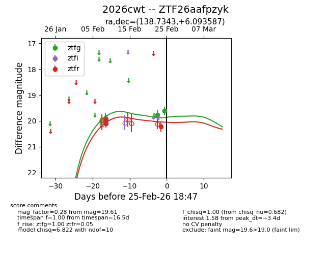
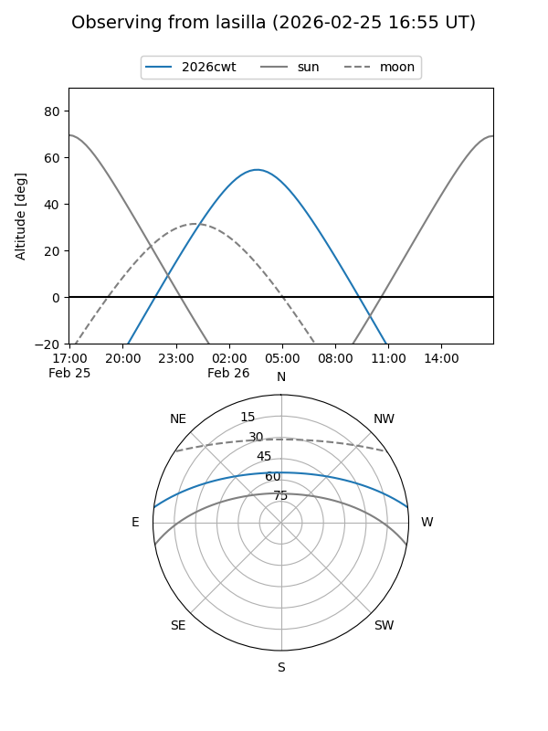
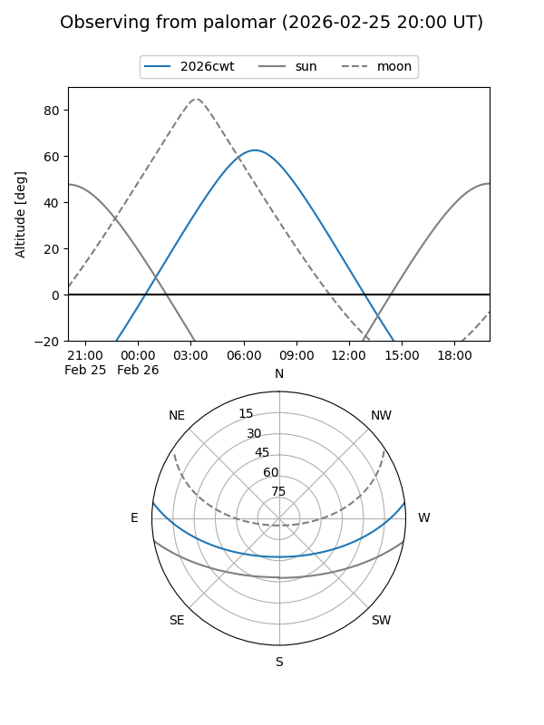
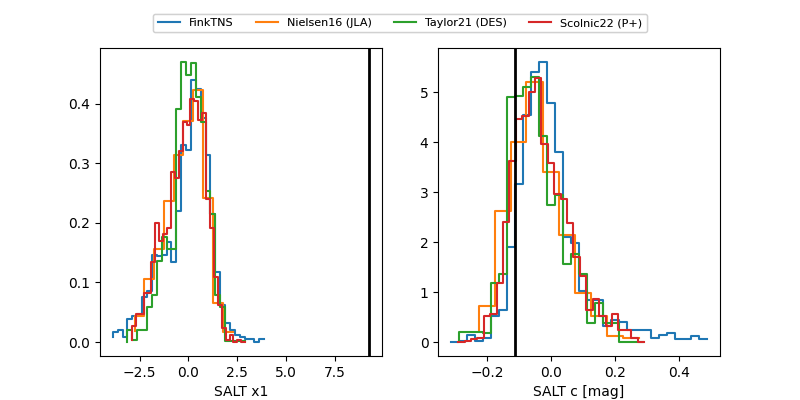

2026cwt
Target 2026cwt at 2026-02-25 18:49
Aliases and brokers:
FINK: link
Lasair: link
ALeRCE: link
TNS: link
YSE: link
alt names
ZTF26aafpzyk (ztf,fink_ztf)
2026cwt (tns,yse)
Coordinates:
equatorial (ra, dec) = 138.7343,+6.09359
equatorial (HMS+DMS) = 09:14:56.22,+06:05:36.91
galactic (l, b) = (224.9297,+34.54159)
Flags:
Photometry:
last ztfg=19.61, ztfr=20.22
3 ztfg, 3 ztfr detections
Lightcurve

Visibility


Additional plots
